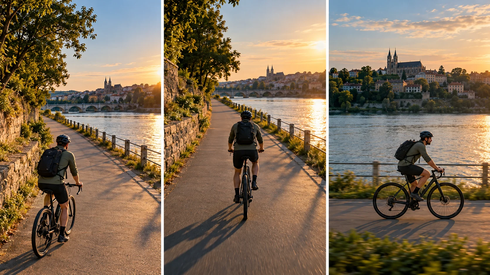

F30 · 중급 · FPV
추적 촬영 항목
움직이는 대상에 합류하기 전에 출발 위치와 빛의 방향을 정하고 진행 여백을 비교한다.
그림에서 확인할 세 가지추적 전 시작 위치와 빛을 정한다
1길 옆의 시작 위치
길 옆에 위치한 카메라와 자전거의 진행 방향을 함께 본다. 추적 도중 구도를 찾기 전에 어디서 합류할지를 정하는 과정이 드러난다.
2피사체와 그림자
가운데 화면에서 자전거 앞의 여백과 바닥의 그림자를 함께 본다. 대상의 크기만 맞추어도 빛의 방향 때문에 다른 요소가 눈에 들어올 수 있다.
3강을 배경으로 한 측면
마지막 화면은 자전거와 강의 관계를 보여준다. 시점이 옆으로 바뀌어도 진행 방향과 대상 앞의 공간이 이어지는지 비교한다.
원리를 설명하는 가상 학습 장면
촬영 설계
촬영을 이렇게 설계한다
합류할 위치를 먼저 고른다
학습 장면에서는 자전거의 길 옆에 분리된 시작 위치를 둔다. 대상이 지나간 뒤 뒤늦게 방향을 바꾸기보다 원하는 진행 방향과 구도가 만들어지는 진입 구간을 사전에 정한다.
빛과 그림자를 함께 본다
태양 방향을 확인하고 카메라의 그림자가 주요 대상이나 화면 중심에 들어올 가능성을 살핀다. 그림자를 무조건 숨기는 것이 아니라 사용할 화면에서 주의를 어디로 끄는지 기준으로 판단한다.
앞 여백을 유지한다
추적 중에는 대상의 몸이 화면에 들어오는 것만 보지 말고 향하는 쪽의 공간을 함께 남긴다. 측면 시점으로 바꿀 때도 진행 방향이 유지되는지 비교해 구도가 갑자기 답답해지지 않게 한다.
Tom Strojnik의 공식 영상 설명은 이륙 위치·드론 그림자·구도·회전·진입점을 개별 챕터로 안내한다.
원본 영상Cinematic FPV Drone Chasing
1. 합류 전의 위치
추적이 시작되는 시점의 카메라와 대상 관계를 본다. 뒤늦게 구도를 찾는 움직임이 생긴다면 시작 위치와 진입점을 먼저 검토한다.
2. 그림자의 주의 분산
드론 그림자가 대상이나 중요한 지형 위에 나타나는지 살핀다. 그림자의 존재 자체보다 장면의 주의를 얼마나 바꾸는지 판단한다.
3. 진행 방향의 여백
대상이 향하는 쪽에 남은 공간을 비교한다. 같은 피사체 크기라도 앞 여백이 줄면 속도와 압박감의 인상이 달라질 수 있다.
재생이 제한되면 원본 영상 새 창을 이용하세요.
공식 소개 · 한국어 요약
공식 목차와 실제 시연 확인을 구별한다
소개와 목차
메타데이터 요약: Tom Strojnik의 공식 YouTube 설명은 추적 촬영의 시점과 구도를 다루는 영상이라고 안내한다.
공개 챕터에는 이륙 위치, 드론 그림자, 독특한 시점, 구도, 회전과 진입점이 포함된다.
확인 범위
각 챕터의 실제 시연과 발언은 이번 검토에서 대조하지 않았다.
학습안 범위
자전거 학습 장면의 구체적인 경로는 이 목차를 바탕으로 구성한 교육적 적용이다.
Kling 프롬프트단문 인과 체인 · 16:9
내가 직접 만들어 본다
드론이 지나가기 전에 미리 움직여 합류하고, 그림자는 비켜 가며, 시점이 바뀌어도 앞 여백이 이어진다는 인과를 지휘한다.
한계 · 실제 태양 방향 확인과 출발 위치의 사전 계획은 영상으로 확인할 수 없고, 합류·그림자·여백의 결과만 볼 수 있다.
- S01강가 길 옆에 드론이 낮게 멈춰 있다.
- S02영상은 하나의 연속 쇼트다.
- S03처음 10초 동안 자전거가 멀리서 오른쪽으로 다가온다.
- S04드론은 자전거가 지나가기 전에 미리 움직인다.
- S05미리 움직였기 때문에 자전거 옆에서 속도가 맞는다.
- S06다음 10초 동안 드론은 자전거와 같은 방향으로 함께 난다.
- S07태양이 드론 뒤에 있어서 그림자가 길 바깥에 떨어진다.
- S08그림자가 자전거 앞길을 가리지 않는다.
- S09자전거 앞쪽에는 가야 할 길이 넓게 남는다.
- S10마지막 10초 동안 드론이 옆으로 옮겨 가며 강을 배경에 둔다.
- S11시점이 바뀌어도 자전거는 계속 같은 쪽으로 나아간다.
- S12앞쪽 여백도 변함없이 남는다.
[네거티브]
- 드론이 길 한가운데에 있어 자전거가 막히는 것 금지
- 중간에 컷이 들어가 쇼트가 끊기는 것 금지
- 자전거가 드론 쪽이 아닌 먼 곳으로 사라지는 것 금지
- 자전거가 지나간 뒤에야 드론이 움직이는 것 금지
- 속도가 맞지 않아 자전거가 화면에서 멀어지는 것 금지
- 드론이 자전거 뒤나 앞으로 크게 어긋나는 것 금지
- 그림자가 자전거나 화면 중앙에 떨어지는 것 금지
- 그림자가 자전거 앞길을 가로지르는 것 금지
- 자전거가 화면 앞 끝에 붙어 여백이 없는 것 금지
- 시점이 바뀌며 강이 빠지거나 화면이 뒤집히는 것 금지
- 자전거가 반대 방향으로 가는 것처럼 보이는 것 금지
- 앞쪽 여백이 사라져 구도가 답답해지는 것 금지
결과에서 볼 것
- 드론이 자전거가 지나가기 전에 움직이기 시작했는가
- 그림자가 자전거나 앞길을 가리지 않았는가
- 측면으로 바뀐 뒤에도 앞 여백이 이어졌는가
프롬프트 설계안이다. Kling에서 실제로 생성해 보기 전에는 결과를 보장하지 않는다. 길이와 모드는 Kling 화면에서 확인해 고른다. 이미지에서 영상으로 만들 때는 첫 프레임 이미지를 실제 입력으로 넣는다.